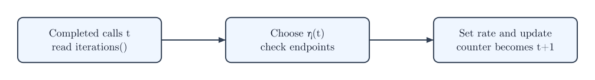
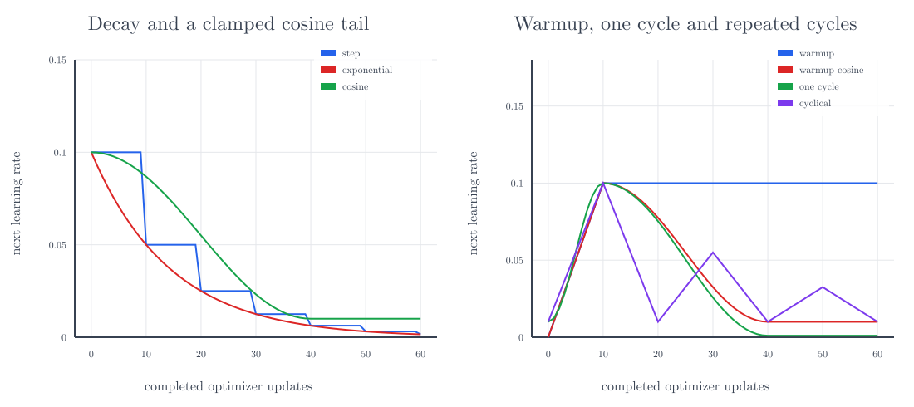
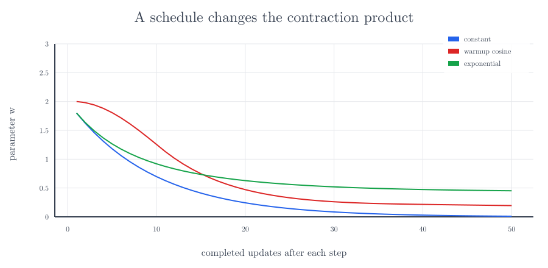
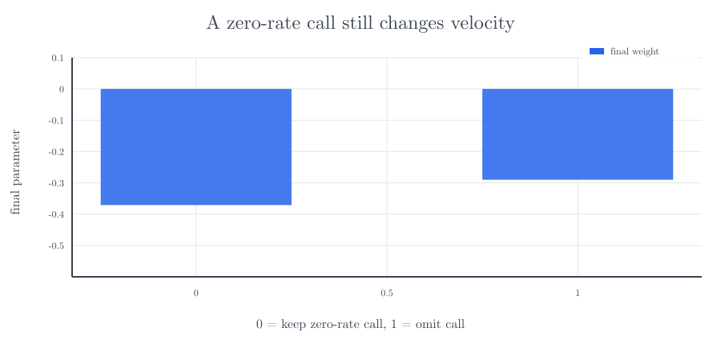

Learning-Rate Schedules: Clock, Endpoints and State
Abstract
A learning rate can vary during training, but the intended schedule depends on its clock and endpoint conventions. We compare step, exponential, cosine, warmup, one-cycle and cyclical native schedules at explicit update indices. A scalar quadratic has an exact product solution, so it checks that scheduled SGD uses the correct rate before each update. A zero-rate momentum example shows that suppressing parameter displacement does not necessarily suppress optimizer-state changes. No dataset or universal rate-selection claim is needed for these controlled checks.
The method
The native schedule functions are pure functions of a nonnegative integer step. In these loops step t is the number of completed optimizer calls, read from iterations() before setting the rate for call t+1. It is not an epoch index unless the application deliberately uses epochs as its clock. Always say which clock a plotted schedule uses.
Step and continuous exponential decay differ at the interval boundaries:
Cosine interpolation from initial rate to a final rate clamps at its duration D:
Warmup rises linearly from zero to its peak; a zero warmup duration disables the ramp. Warmup-cosine joins the ramp to a cosine tail at the warmup boundary. One-cycle here uses a cosine rise and fall of the learning rate only: momentum is not cycled. Cyclical uses triangular cycles with an optional multiplicative amplitude reduction per full cycle. Negative steps, nonfinite/negative rates and invalid shape parameters are rejected. A valid schedule does not prove stability on a particular objective.
The concept diagram below is drawn by dm::graphics::Diagram. Its editable C++
source is the complete block below; regeneration uses the same datamunge toolchain
as the numerical examples. Exports consume the saved local SVG.
#include <dm/dm.hpp>
int main() {
std::filesystem::create_directories("build");
dm::graphics::Diagram diagram;
diagram.node("n0", {0.0, 0}, "Completed calls t\nread iterations()");
diagram.node("n1", {5.5, 0}, "Choose η(t)\ncheck endpoints");
diagram.node("n2", {11.0, 0}, "Set rate and update\ncounter becomes t+1");
diagram.edge("n0", "n1").edge("n1", "n2");
diagram.save_svg("build/learning_rate_schedules_concept.svg");
}
Simple examples
All schedule families on one update clock
Use step/exponential factor .5 and interval ten; cosine duration forty; warmup ten; a one-cycle rise of ten within a forty-update duration; and triangular half-period ten with amplitude decay .5. Values after forty make the clamped tails visible. The table samples endpoints, while the curves show every integer update. The families have different integrated rates, so identical peak rates are not an equal optimization budget.
#include <dm/dm.hpp>
int main() {
namespace sch = dm::nn::schedule;
for (const auto& [actual, expected] : std::vector<std::pair<double, double>>{
{sch::step_decay(1, .5, 10, 9), 1}, {sch::step_decay(1, .5, 10, 10), .5},
{sch::exponential(1, .25, 10, 5), .5}, {sch::cosine(1, .1, 100, 0), 1},
{sch::cosine(1, .1, 100, 50), .55}, {sch::cosine(1, .1, 100, 200), .1},
{sch::warmup(1, 10, 0), 0}, {sch::warmup(1, 0, 0), 1},
{sch::warmup_cosine(1, .1, 10, 100, 10), 1},
{sch::one_cycle(.1, 1, .01, 30, 100, 30), 1},
{sch::one_cycle(.1, 1, .01, 30, 100, 200), .01},
{sch::cyclical(.1, 1, 10, 10), 1}, {sch::cyclical(.1, 1, 10, 20), .1},
{sch::cyclical(.1, 1, 10, 30, .5), .55}}) {
if (!(std::abs(actual - expected) < 1e-12))
throw std::runtime_error("Schedule boundary differs from its reference");
}
for (const auto& invalid : std::vector<std::function<double()>>{
[] { return sch::step_decay(1, .5, 0, 1); }, [] { return sch::cosine(1, 0, 0, 1); },
[] { return sch::warmup_cosine(1, 0, 10, 10, 1); },
[] { return sch::one_cycle(1, .1, 0, 5, 10, 0); },
[] { return sch::cyclical(.1, 1, 0, 0); }, [] { return sch::warmup(1, 10, -1); }}) {
try {
(void)invalid();
} catch (const std::invalid_argument&) {
continue;
}
throw std::runtime_error("Invalid schedule was accepted");
}
std::print("Verified 14 schedule boundaries and rejected six invalid schedules.\n\n");
const std::vector<std::string> names = {
"step", "exponential", "cosine", "warmup", "warmup cosine", "one cycle", "cyclical"};
const std::vector<std::function<double(std::int64_t)>> functions = {
[](auto t) { return sch::step_decay(.1, .5, 10, t); },
[](auto t) { return sch::exponential(.1, .5, 10, t); },
[](auto t) { return sch::cosine(.1, .01, 40, t); },
[](auto t) { return sch::warmup(.1, 10, t); },
[](auto t) { return sch::warmup_cosine(.1, .01, 10, 40, t); },
[](auto t) { return sch::one_cycle(.01, .1, .001, 10, 40, t); },
[](auto t) { return sch::cyclical(.01, .1, 10, t, .5); }};
const std::vector<dm::graphics::RGB> colors = {
{37, 99, 235}, {220, 38, 38}, {22, 163, 74}, {124, 58, 237}};
auto decay = dm::graphics::RPlot::create(), rise = dm::graphics::RPlot::create();
dm::dstruct::DataFrame table;
std::vector<std::string> rule;
std::vector<double> sampled_step, sampled_rate;
for (std::size_t i = 0; i < functions.size(); ++i) {
std::vector<double> t, rate;
for (int j = 0; j <= 60; ++j) {
t.push_back(j);
rate.push_back(functions[i](j));
if (j == 0 || j == 10 || j == 20 || j == 40 || j == 60) {
rule.push_back(names[i]);
sampled_step.push_back(j);
sampled_rate.push_back(rate.back());
}
}
(i < 3 ? decay : rise).lines(t, rate, names[i], colors[i < 3 ? i : i - 3]);
}
table.add_column("schedule", rule);
table.add_column("completed_updates", sampled_step);
table.add_column("next_rate", sampled_rate);
decay.title("Decay and a clamped cosine tail")
.x_label("completed optimizer updates")
.y_label("next learning rate")
.y_limits(0, .15);
rise.title("Warmup, one cycle and repeated cycles")
.x_label("completed optimizer updates")
.y_label("next learning rate")
.y_limits(0, .18);
std::filesystem::create_directories("build");
dm::graphics::RLayout::create(1, 2).add(decay).add(rise).size(1100, 490).fit_panels().save_svg(
"build/schedule_families.svg");
std::print("{}\n", table.to_md(6));
}Verified 14 schedule boundaries and rejected six invalid schedules.
| schedule | completed_updates | next_rate |
|---|---|---|
| step | 0 | 0.100000 |
| step | 10 | 0.050000 |
| step | 20 | 0.025000 |
| step | 40 | 0.006250 |
| step | 60 | 0.001563 |
| exponential | 0 | 0.100000 |
| exponential | 10 | 0.050000 |
| exponential | 20 | 0.025000 |
| exponential | 40 | 0.006250 |
| exponential | 60 | 0.001563 |
| cosine | 0 | 0.100000 |
| cosine | 10 | 0.086820 |
| cosine | 20 | 0.055000 |
| cosine | 40 | 0.010000 |
| cosine | 60 | 0.010000 |
| warmup | 0 | 0.000000 |
| warmup | 10 | 0.100000 |
| warmup | 20 | 0.100000 |
| warmup | 40 | 0.100000 |
| warmup | 60 | 0.100000 |
| warmup cosine | 0 | 0.000000 |
| warmup cosine | 10 | 0.100000 |
| warmup cosine | 20 | 0.077500 |
| warmup cosine | 40 | 0.010000 |
| warmup cosine | 60 | 0.010000 |
| one cycle | 0 | 0.010000 |
| one cycle | 10 | 0.100000 |
| one cycle | 20 | 0.075250 |
| one cycle | 40 | 0.001000 |
| one cycle | 60 | 0.001000 |
| cyclical | 0 | 0.010000 |
| cyclical | 10 | 0.100000 |
| cyclical | 20 | 0.010000 |
| cyclical | 40 | 0.010000 |
| cyclical | 60 | 0.010000 |

Checking the theory
Scheduled SGD matches a product formula
For f(w)=w²/2, SGD gives w_(t+1)=(1−eta_t)w_t. Therefore after T updates, \(w_T=w_0\prod_{t=0}^{T-1}(1-\eta_t)\). The program independently multiplies these factors and compares its result after every tensor-autograd update. Rates are read from the completed-call counter and set before minimize(). This checks indexing, not a claim that the illustrated schedules are optimally tuned.
#include <dm/dm.hpp>
int main() {
const std::vector<std::string> names = {"constant", "warmup cosine", "exponential"};
const std::vector<std::function<double(std::int64_t)>> schedules = {
[](auto) { return .1; },
[](auto t) { return dm::nn::schedule::warmup_cosine(.1, .01, 10, 40, t); },
[](auto t) { return dm::nn::schedule::exponential(.1, .5, 10, t); }};
const std::vector<dm::graphics::RGB> colors = {{37, 99, 235}, {220, 38, 38}, {22, 163, 74}};
auto p = dm::graphics::RPlot::create();
dm::dstruct::DataFrame table;
for (std::size_t k = 0; k < schedules.size(); ++k) {
auto w = dm::nn::from_vector(std::vector<double>{2}).requires_grad_();
dm::nn::Optimizer opt({w}, 0);
double expected = 2, worst = 0;
std::vector<double> step, weight;
for (int i = 0; i < 50; ++i) {
const double rate = schedules[k](opt.iterations());
expected *= 1 - rate;
opt.set_learning_rate(rate);
opt.minimize(dm::nn::sum(dm::nn::square(w)) * .5);
worst = std::max(worst, std::abs(w.item<double>() - expected));
step.push_back(opt.iterations());
weight.push_back(w.item<double>());
}
if (worst > 1e-13)
throw std::runtime_error("scheduled SGD differs from product");
p.lines(step, weight, names[k], colors[k]);
dm::dstruct::DataFrame row;
row.add_column("schedule", std::vector<std::string>{names[k]});
row.add_column("final_weight", std::vector<double>{w.item<double>()});
row.add_column("product_reference", std::vector<double>{expected});
row.add_column("max_error", std::vector<double>{worst});
row.add_column("updates", std::vector<double>{double(opt.iterations())});
table = k ? table.concat_rows(row) : row;
}
p.title("A schedule changes the contraction product")
.x_label("completed updates after each step")
.y_label("parameter w")
.y_limits(0, 3);
std::filesystem::create_directories("build");
p.size(900, 440).save_svg("build/schedule_product.svg");
std::print(
"{}\n",
table.to_md(
dm::dstruct::DataFrame::MarkdownOptions{.digits = 9, .scientific = {"max_error"}}));
}| schedule | final_weight | product_reference | max_error | updates |
|---|---|---|---|---|
| constant | 0.010307550 | 0.010307550 | 3.330669074e-16 | 50 |
| warmup cosine | 0.195126147 | 0.195126147 | 6.661338148e-16 | 50 |
| exponential | 0.452062854 | 0.452062854 | 2.220446049e-16 | 50 |

Zero rate is different from omitting an update
For momentum .9 and constant gradient one, use rates (.1,0,.1). The second call changes no weight, but updates velocity to 1.9 and advances the counter. The third velocity is 2.71. Omitting the second call instead yields velocity 1.9 on the next call, so the final parameters differ. A schedule that temporarily reaches zero must specify whether optimizer calls continue; these native calls do continue.
#include <dm/dm.hpp>
int main() {
dm::nn::OptimizerConfig c;
c.kind = dm::nn::OptimizerKind::Momentum;
const auto full = dm::nn::optimizer_gradient_trace(
{0}, dm::linalg::DenseMatrix<double>(3, 1, {1, 1, 1}), {.1, 0, .1}, c),
skip = dm::nn::optimizer_gradient_trace(
{0}, dm::linalg::DenseMatrix<double>(2, 1, {1, 1}), {.1, .1}, c);
auto p = dm::graphics::RPlot::create();
p.bars(
{0, 1},
{full.double_at("after", 2), skip.double_at("after", 1)},
"final weight",
{37, 99, 235},
.5)
.title("A zero-rate call still changes velocity")
.x_label("0 = keep zero-rate call, 1 = omit call")
.y_label("final parameter")
.y_limits(-.6, .1);
std::filesystem::create_directories("build");
p.size(900, 430).save_svg("build/schedule_zero_rate.svg");
std::print("Keep zero-rate call:\n\n{}\n\nOmit call:\n\n{}\n", full.to_md(6), skip.to_md(6));
}Keep zero-rate call:
| step | coordinate | rate | gradient | before | after | velocity |
|---|---|---|---|---|---|---|
| 1 | 0 | 0.1 | 1 | 0.0 | -0.100 | 1.00 |
| 2 | 0 | 0.0 | 1 | -0.1 | -0.100 | 1.90 |
| 3 | 0 | 0.1 | 1 | -0.1 | -0.371 | 2.71 |
Omit call:
| step | coordinate | rate | gradient | before | after | velocity |
|---|---|---|---|---|---|---|
| 1 | 0 | 0.1 | 1 | 0.0 | -0.10 | 1.0 |
| 2 | 0 | 0.1 | 1 | -0.1 | -0.29 | 1.9 |

Conclusion
A schedule is a rate function plus a clock and an application convention. Endpoint tables and an exactly soluble quadratic catch indexing errors; zero-rate calls expose state changes hidden by a flat parameter trace. Schedule shapes alone do not establish stability or generalization on another objective.
References
- Loshchilov, I. and Hutter, F. (2017). SGDR: Stochastic Gradient Descent with Warm Restarts. Cosine annealing context; the native cosine function here is a single clamped segment, not a restart policy.
- Smith, L. N. (2017). Cyclical Learning Rates for Training Neural Networks. Cyclical rate motivation; native one-cycle here changes the rate only.